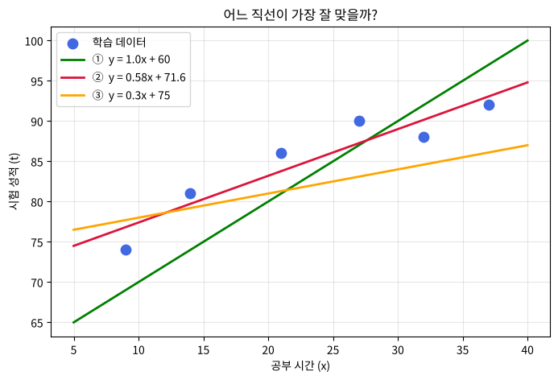
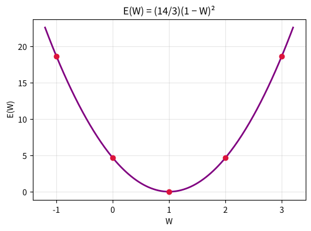

제 5 편
선형 회귀 (1) - 오차와 손실함수#
근거 자료: 박성호, 「Linear Regression (I) - 오차 • 손실함수」 (ML_LEC_13), 「Linear Regression (II)」 (ML_LEC_14) 일부
학습 목표#
입력과 정답의 관계를 일차함수 \(y = Wx + b\) 로 나타내고, 가중치 \(W\) 와 바이어스 \(b\) 의 뜻을 말할 수 있다.
오차 \(t - y\) 를 구하고, 오차를 제곱해서 평균 내는 이유를 설명할 수 있다.
손실함수 \(E(W, b)\) 가 \(W, b\) 의 함수임을 알고, 손실함수가 가장 작아지는 직선을 찾는 것이 학습임을 이해한다.
지난 시간 복습#
제 3편: 데이터 표를 입력
x_data와 정답t_data로 나눴습니다.제 4편: 회귀는 공부 시간으로 시험 점수처럼 연속적인 숫자를 예측하는 지도학습입니다.
핵심 정리#
① 모델과 오차
\(y = Wx + b\), 오차 \(= t - y\)
② 손실함수 (평균제곱오차)
\(\displaystyle E(W, b) = \frac{1}{n} \times \{(t_{1} - y_{1})^{2} + (t_{2} - y_{2})^{2} + \cdots + (t_{n} - y_{n})^{2}\}\)
오차를 제곱하면 부호가 사라져 서로 지워지지 않고, 큰 오차일수록 더 크게 벌을 준다.
오차² 은 한 변이 \(|t - y|\) 인 정사각형의 넓이이므로, \(E\) 는 ‘정사각형 넓이의 평균’ 이다. (아래 애니메이션 1)
③ 손실함수는 \(W\) 의 이차함수
\(x = (1, 2, 3), t = (1, 2, 3), b = 0\) 이면
\(\displaystyle E(W) = \frac{(1 - W)^{2} + (2 - 2W)^{2} + (3 - 3W)^{2}}{3} = \frac{(1 + 4 + 9)(1 - W)^{2}}{3} = \frac{14}{3}(W - 1)^{2}\)
→ 아래로 볼록한 포물선, \(W = 1\) 에서 최솟값 0.
④ 최솟값을 주는 \(W, b\) (최소제곱법)
\(E\) 를 \(W, b\) 로 각각 편미분한 값이 0 이 되는 점에서
\(\displaystyle W = \frac{\sum(x_{i} - \bar{x})(t_{i} - \bar{t})}{\sum(x_{i} - \bar{x})^{2}}\), \(b = \bar{t} - W \bar{x}\)
공부 시간 – 점수 데이터에서는 \(W \fallingdotseq 0.58, b \fallingdotseq 71.6\) 이다.
\(W, b\) 를 함께 바꾸면 \(E(W, b)\) 는 그릇(골짜기) 모양의 곡면이고, 그 바닥이 이 점이다. (아래 애니메이션 2)
코드로 직접 해 보려면 : 페이지 위쪽 로켓 버튼 → Colab 을 누르세요. 값을 바꿔 가며 실행하고, 연습 문제의 정답도 코랩에서 확인합니다. 처음 열면 파일 → Drive에 사본 저장 부터 하세요.
개념 다지기 1. 데이터를 가장 잘 나타내는 직선 찾기#
공부 시간 \(x\) |
9 |
14 |
21 |
27 |
32 |
37 |
|---|---|---|---|---|---|---|
시험 성적 \(t\) |
74 |
81 |
86 |
90 |
88 |
92 |
공부 시간이 늘수록 성적도 대체로 오르는 경향 → \(y = Wx + b\) 꼴의 직선으로 나타낼 수 있습니다.
머신러닝에서는 기울기 \(W\) 를 가중치(weight), \(y\) 절편 \(b\) 를 바이어스(bias) 라고 부릅니다.
학습(learning) = 데이터를 가장 잘 나타내는 \(W\) 와 \(b\) 를 찾는 것
[생각해 보기] 💡 아래 그래프의 세 직선 ①, ②, ③ 중 데이터를 가장 잘 나타내는 직선은? ( ) 그렇게 판단한 기준은 무엇인가요? ( )

개념 다지기 2. 오차(error) = 정답 − 예측값#
직선 \(y = Wx + b\) 로 계산한 값을 예측값 \(y\), 실제 값을 정답 \(t\) 라고 하면
오차 \(= t - y = t - (Wx + b)\)
[연습 1] 직선 \(y = 0.5x + 70\) 일 때 표를 완성하세요.
\(x\) |
9 |
14 |
21 |
27 |
32 |
37 |
|---|---|---|---|---|---|---|
정답 \(t\) |
74 |
81 |
86 |
90 |
88 |
92 |
예측 \(y = 0.5x + 70\) |
74.5 |
77 |
( ) |
83.5 |
( ) |
88.5 |
오차 \(t - y\) |
−0.5 |
4 |
( ) |
6.5 |
( ) |
3.5 |
오차² |
0.25 |
16 |
( ) |
42.25 |
( ) |
12.25 |
개념 다지기 3. 왜 오차를 ‘제곱’ 할까?#
오차를 그냥 더하면 + 오차와 − 오차가 서로 지워져서 합이 0 에 가까워질 수 있습니다. → 합이 0 이라고 해서 정말 잘 맞는 직선인지 알 수 없습니다.
그래서 오차를 제곱해서 더합니다.
제곱하면 언제나 0 이상 → 서로 지워지지 않는다.
오차가 큰 점은 제곱하면 훨씬 더 커진다 \((2^{2} = 4, 10^{2} = 100)\) → 많이 틀린 점을 더 강하게 고치게 된다.
[확인 1] 오차가 (+3, −3) 인 두 점이 있다. 오차의 합 = ( ), 오차²의 합 = ( )
개념 다지기 4. 손실함수 (loss function)#
데이터가 \(n\) 개일 때, 오차² 의 평균을 손실함수라고 합니다.
\(\displaystyle E(W, b) = \frac{(t_{1} - y_{1})^{2} + (t_{2} - y_{2})^{2} + \cdots + (t_{n} - y_{n})^{2}}{n}\) \(\displaystyle = \frac{1}{n} \times \sum_{i=1}^{n} \{t_{i} - (W x_{i} + b)\}^{2}\)
\(x\) 와 \(t\) 는 데이터로 이미 주어진 값입니다.
따라서 \(E\) 의 값을 바꾸는 것은 \(W\) 와 \(b\) 뿐 → 손실함수는 \(W, b\) 의 함수 \(E(W, b)\)
[연습 2] [연습 1] 의 직선 \(y = 0.5x + 70\) 의 손실함수 값은 \(\displaystyle E(0.5, 70) = \frac{0.25 + 16 + 30.25 + 42.25 + 4 + 12.25}{6} =\) ( )
선형 회귀의 최종 목표: 손실함수 \(E(W, b)\) 가 가장 작아지는 \(W\) 와 \(b\) 를 찾는 것!
[확인 2] 세 직선 중 손실함수 값이 가장 작은 직선은 ( ) 번이고, 이것이 처음 그래프에서 고른 직선과 같은가요?
애니메이션 1. ‘오차²’ 은 진짜 정사각형의 넓이다!#
오차가 \(t - y\) 이면 오차² 은 한 변이 \(|t - y|\) 인 정사각형의 넓이 입니다. 기울기 \(W\) 를 0 → 1.2 로 바꿀 때 정사각형들의 넓이(빨강)와 손실함수 \(E(W)\) (오른쪽)가 어떻게 변하는지 보세요. (이 애니메이션에서는 바이어스를 \(b = 71.6\) 으로 고정합니다)
[관찰 1] ① 손실함수 \(E(W)\) 의 그래프는 ( ) 모양이다. (힌트: 수학 시간에 배운 함수) ② 정사각형들이 가장 작아질 때의 \(W\) 는 약 ( ) 이고, 이때 그래프는 ( 꼭짓점 / 양 끝 ) 에 있다.
직접 조절해 보기#
슬라이더로 \(W\) 와 \(b\) 를 바꿔 가며 손실함수 값이 가장 작아지는 직선을 찾아보세요. 친구와 누가 더 작은 \(E\) 를 찾는지 겨뤄 보세요!
내가 찾은 값: \(W =\) ( ), \(b =\) ( ), \(E =\) ( )
개념 다지기 5. 손실함수의 모양 - 간단한 데이터로 손 계산#
계산을 쉽게 하기 위해 아래 데이터에서 \(b = 0\) 으로 두고 \(E(W)\) 를 계산해 봅시다.
\(x\) |
1 |
2 |
3 |
|---|---|---|---|
\(t\) |
1 |
2 |
3 |
\(\displaystyle E(W) = \frac{(1 - W\cdot 1)^{2} + (2 - W\cdot 2)^{2} + (3 - W\cdot 3)^{2}}{3} = \frac{(1 - W)^{2} \times (1 + 4 + 9)}{3} = \frac{14}{3}(1 - W)^{2}\)
\(W\) |
−1 |
0 |
1 |
2 |
3 |
|---|---|---|---|---|---|
\(E(W)\) |
18.7 |
( ) |
( ) |
4.67 |
( ) |
[생각해 보기] 💡 \(\displaystyle E(W) = \frac{14}{3}(1 - W)^{2}\) 은 \(W =\) ( ) 에서 최솟값 ( ) 을 갖는 이차함수이다. 이번처럼 식이 간단하면 손으로 꼭짓점을 찾을 수 있지만, 변수\((W)\)가 수백만 개인 인공지능은 어떻게 최솟값을 찾을까요? → 다음 시간: 미분을 이용한 경사하강법!
W = -1 → E(W) = 18.67
W = 0 → E(W) = 4.67
W = 1 → E(W) = 0.00
W = 2 → E(W) = 4.67
W = 3 → E(W) = 18.67

애니메이션 2. \(W\) 와 \(b\) 를 함께 바꾸면? - 손실함수 ‘그릇’#
\(W\) 와 \(b\) 가 둘 다 변하면 \(E(W, b)\) 는 길쭉한 그릇(골짜기) 모양의 곡면이 됩니다. 그릇의 가장 낮은 바닥(빨간 점) 이 우리가 찾는 \(W, b\) 입니다. (공부 시간 데이터 사용. 왼쪽 곡면이 천천히 돌아가고, 오른쪽은 위에서 내려다본 등고선입니다. 너무 높은 부분은 잘라서 보여 줍니다)
연습 문제#
[문제 1] 직선 \(y = x + 60\) 의 공부 시간 데이터에 대한 오차를 모두 구하고, 오차의 합과 손실함수 값을 구하세요. 오차: ( , , , , , ), 오차의 합 = ( ), \(E =\) ( )
[문제 2] [문제 1] 의 직선과 \(y = 0.5x + 70\) 중 어느 쪽이 더 좋은 직선인가요? 오차의 합으로 판단할 때와 손실함수로 판단할 때 결과가 같은지 비교하세요.
정리#
핵심 |
내용 |
|---|---|
모델 |
\(y = Wx + b\) (\(W\): 가중치, \(b\): 바이어스) |
오차 |
\(t - y = t - (Wx + b)\) |
손실함수 |
\(\displaystyle E(W, b) = \frac{1}{n} \times \sum \{t_{i} - (W x_{i} + b)\}^{2} \leftarrow\) 오차² 의 평균 |
학습 목표 |
\(E(W, b)\) 가 최소가 되는 \(W, b\) 찾기 |
도전 과제#
\(E(W)\) 그래프에서 현재 \(W = 3\) 에 있다고 하자. 이 점에서 접선의 기울기는 ( 양수 / 음수 ) 이므로, \(E(W)\) 를 줄이려면 \(W\) 를 ( 늘려야 / 줄여야 ) 한다. → 제 2편의 수치미분으로 이 기울기를 구할 수 있다!